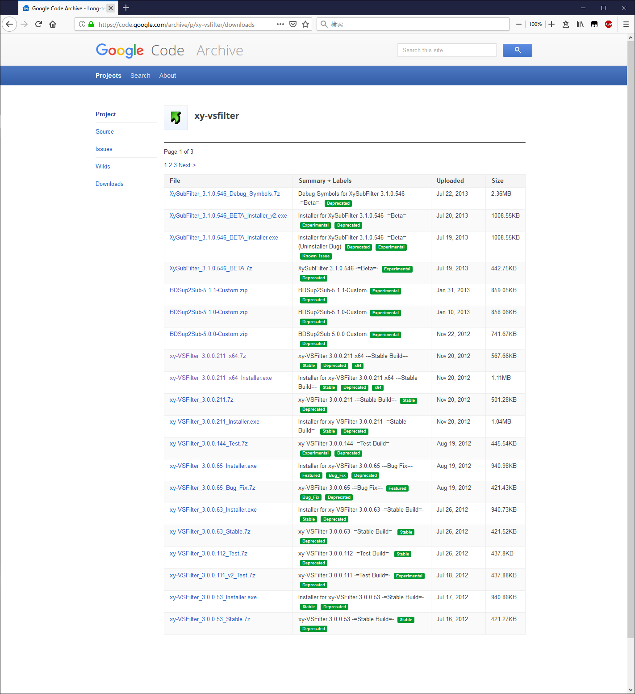
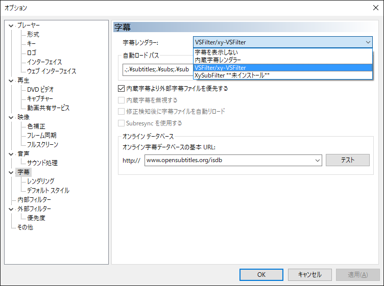
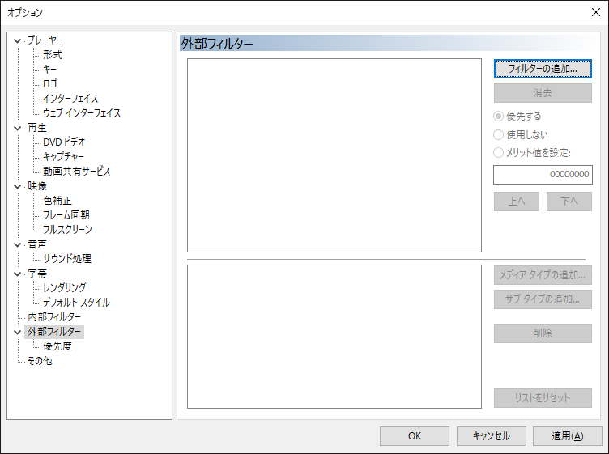
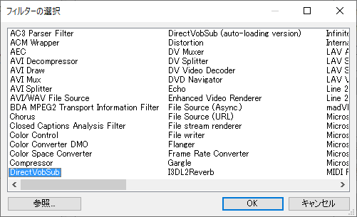
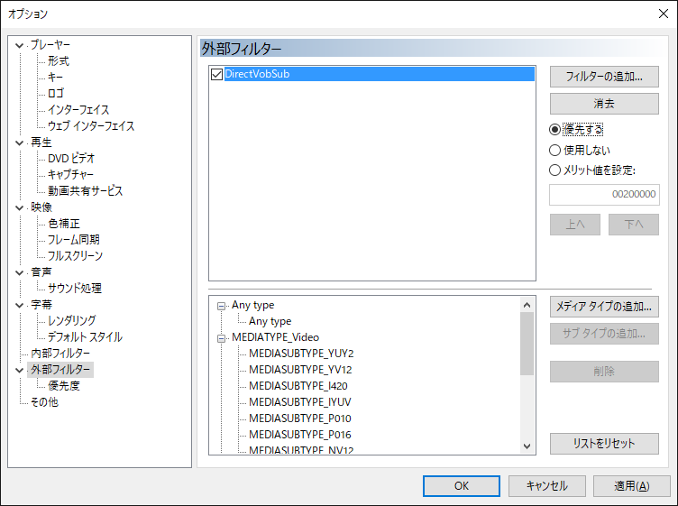
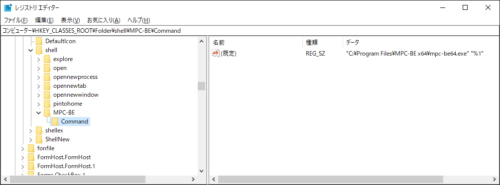
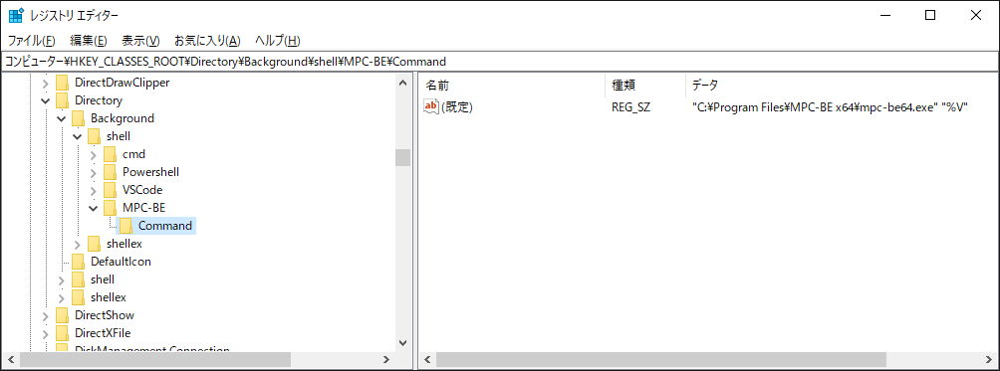

外部フィルターDirectをインストールする。
↓ダウンロード先↓
https://code.google.com/archive/p/xy-vsfilter/downloads
Installerをダウンロード&実行すればいい。

MPCを起動して、
字幕レンダラーをVS-Filterに指定

外部フィルターのフィルターの追加を選択

DirectVovSubを選択。OK

優先するにチェック。OK

レジストリに Command キーを以下の様に追加する
Path : \HKEY_CLASSES_ROOT\Folder\shell\
Data : "<MPCの実行ファイルのフルパス>" "%1"

Path : \HKEY_CLASSES_ROOT\Directory\Background\shell\
Data : "<MPCの実行ファイルのフルパス>" "%V"
※↑ '%V' である事に注意 ↑※

右クリックメニューのショートカットキーをレジストリで変更設定する方法
https://boukenki.info/migi-click-menu-shortcut-key-registry-settei-houhou/
エクスプローラの右クリックメニューをカスタマイズする
https://qiita.com/tueda/items/0036ee8e9280f70f04f0